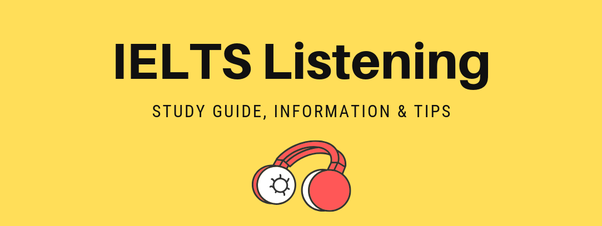

আইইএলটিএস পার্ট ২ - লিসেনিং
যে কোন ভাষায় যোগাযোগের জন্য মুখনিঃসৃত শব্দের মাধ্যমে কাউকে মনের ভাব বোঝানো যতটুকু প্রয়োজন সেই ভাষাভাষী ব্যক্তির কথা বুঝতে পারাও সমানভাবে প্রয়োজন। তাই যে কোন ভাষায় দক্ষতা অর্জনের জন্যে সে ভাষায় সঠিকভাবে শুনতে পারা খুব গুরুত্বপূর্ণ। যে কোন ভাষার দক্ষতা নির্ণয়ের পরীক্ষায় তাই লিসেনিং অংশ সবসময়ই সমান গুরুত্ব বহন করে। আই ই এল টি এস পরীক্ষাটিও এর ব্যতিক্রম নয়।

আইইএলটিএস লিসেনিং পরীক্ষাটি মূলত অডিও শুনে সঠিকভাবে উত্তর করার পরীক্ষা। আপনাকে বিভিন্ন অডিও ক্লিপ শোনানো হবে । সরবরাহকৃত প্রশ্ন দেখে ক্লিপ থেকে উত্তর বের করে আপনাকে উত্তর পত্রে লিখতে হবে। লিসেনিং পরীক্ষাটি সর্বোমোট ৪০ মিনিটের হয়ে থাকে। ৩০ মিনিট থাকে অডিও শুনে উত্তর বের করার জন্যে। অডিও শেষ হয়ে গেলে ১০ মিনিট সময়ে দেওয়া হবে উত্তরগুলো উত্তর পত্রে ট্রান্সফার করার। তাই অনুরোধ থাকবে অডিও চলাকালীন উত্তরপত্রে হাত না দেওয়ার। এই পরীক্ষাটি ৪০ মার্কের হয়। ৩০ মিনিটের অডিও ক্লিপের চারটি অংশ থাকে। প্রতিটি অংশকে এক একটি সেকশন বলা হয়। তবে ২০২০ সালের জানুয়ারি থেকে আই ই এল টি এস লিসেনিং পরীক্ষায় সীমিত কিছু পরিবর্তন আনা হয়। পরিবর্তিত নিয়ম অনুযায়ী এখন এই অংশগুলীকে “পার্ট” বলা হয় ।
বিভিন্ন কোচিং-এ আপনি যখন মক এক্সাম দিবেন, সেখাঙ্কার লিসেনিং অভিজ্ঞতা আপনার জন্য খুব একটা সুখকর হবে না। পর্যাপ্ত রিসোর্সের অভাব এক্ষেত্রে মূল কারন। তবে আইইএলটিএস লিসেনিং পরীক্ষায় আপনার এমন কোন সমস্যা হবে না। সেখানে ব্যবহৃত হেডসেট গুলো যথেষ্ট ভালো মানের এবং ব্লুটুথ দ্বারা সংযুক্ত থাকে। বেশ শক্ত –পোক্ত ভাবেই অডিও ক্লিপের মান নিয়ন্ত্রণ করা হয়। তাই অডিও কোয়ালিটি নিয়ে চিন্তার কারন নেই। তবে এক্ষেত্রে আমি আমার ট্রেইনারের একটি পরামর্শ স্মরণ করতে চাই। বাসায় বসে প্র্যাকটিসের সময় বা মক এক্সামের সময় যত সম্ভব বিরুপ পরিবেশে পরীক্ষা দিন। এতে করে কঠিন পরিস্থিতি মোকাবেলা করার একটি অভ্যাস তৈরি হয়ে যাবে।
পরীক্ষার শুরুতেই আপনাকে যে কাজটি করতে হবে তা হল আপনার হেডসেটটি চেক করে নিতে হবে। দুই কানে আলাদা করে চেক করে নেওয়া অবশ্য কর্তব্য। ব্যাকগ্রাউন্ড নয়েজ থাকলে অবশ্যই হেডসেটটি পরিবর্তন করুন। আপনি নিশ্চই চাইবেন না যান্ত্রিক ত্রুটির কারনে ৪-৫ নাম্বার হাতছাড়া হয়ে যাক। একই সাথে হেডসেটের ভলিউমটি আপনার নিজের শ্রবন ক্ষমতার সাথে সিঙ্ক্রনাইজ করুন। অবশ্যই ফুল ভলিউমে দিয়ে শুনবেন না। এতে করে আপনার ব্রেইন খুব দ্রুত স্ট্রেসড হয়ে যেতে পারে। ফলাফলস্বরুপ আপনার মনোযোগের ব্যাঘাত ঘটতে পারে । মনে রাখবেন, লিসেনিং পরীক্ষায় মুহূর্তের জন্যে মনোযোগ বিচ্যুতি হলে একটি- দুটি উত্তর চলে যেতে পারে। তাছাড়া ক্লিপের ধারাবাহিকতা একবার হারিয়ে ফেললে পুনরায় ট্র্যাকে ফিরে আসতে আসতে বেশ কয়েকটি উত্তর অতিক্রম করে চলে যেতে পারে। তাই কোনভাবেই আপনি মনোযোগ হারাবেন না। আসে পাশে , এদিক- ওদিক চাইবেন না। এতে করে আপনার ব্যান্ড স্কোর কমবে বৈ বাড়বে না ।
লিসেনিং টেস্টের পার্ট-১ এ খুব সহজ কিছু প্রশ্ন থাকে। বেশিরভাগ সময়ে এখানে টেলিফোন কনভারসেশন জাতীয় একটি ক্লিপ শোনানো হয়। এখান থেকে নাম, বয়স, ঠিকানা ইত্যাদি শুনে লিখতে হয় । আগেই বলেছি , অডিও চলাকালীন উত্তর পত্রে হাত দেওয়ার দরকার নেই। তাই এই সময়ে আপনি সমস্ত উত্তর প্রশ্নের উপরেই টুকে রাখবেন। ভয়ের কিছু নেই, আই ই এল টি এস পরীক্ষায় আপনাকে দেওয়া প্রশ্নপত্রে আপনি ইচ্ছা মত দাগ দিতে পারবেন এবং বলে রাখি এই দাগাদাগি করার বিশেষ একটি ভূমিকা এই পরীক্ষাতে আছে । এটা বললাম এই কারনে যে , ভালো স্কোর তলার জন্যে আপনাকে অবশ্যই বুঝতে হবে যে আপনার কোন ইনফরমেশনটি দরকার। আর এটা বোঝার জন্য সব থেকে চমৎকার উপায় হল “কি-ওয়ার্ড”খুজে তার নিচে দাগ দেওয়া। আপনি প্রশ্ন দেখে উপযুক্ত “কি-ওয়ার্ড” যত দ্রুত বের করে ফেলতে পারবেন , আপনি তত সময় হাতে রাখতে সক্ষম হবেন। মনে রাখবেন, লিসেনিং টেস্টে সময় বাচানো খুব গুরুত্বপূর্ণ।
পার্ট-২ এবং ৩ এ মূলত এম সি কিউ/ ম্যাপ ফিলিং/ গ্যাপ ফিলিং থাকে। এখানে বলে রাখা ভালো অনেকের কাছেই এম সি কিউ এবং ম্যাপ ফিলিং বেশ ভীতি উদ্রেককারী মনে হয়। শুরুতে এমন মনে হওয়াটা স্বাভাবিক। কিন্তু একটু কৌশলী হতে পারলে এই দুটি অংশই আপনার শক্তির জায়গা হতে পারে।
পার্ট-৪ এ আপনাকে একটি মনোলগ শোনানো হবে। মনোলগ জিনিসটা কি- যারা বোঝেন না, তাদেরকে একটু কষ্ট করে গুগল করতে আহ্বান জানাচ্ছি। পার্ট-৪ বেশ কঠিন মনে হতে পারে। কারন পার্ট- ১,২ তে মোটামুটি সরাসরি উত্তর খুজে পাওয়া গেলেও পার্ট-৪ এ এসে টা পাওয়া যায় না। এখানে প্রশ্ন গুলা একটু প্যারা ফ্রেজ করা থাকে। এখানে একটি গুরুত্বপূর্ণ শব্দ ব্যবহার করেছি। “প্যারাফ্রেজ”। আই ই এল টি এস এর স্পিকিং বাদে সমস্ত মডিউলে এই জিনিসটির ব্যবহার হয়। তাই এই টার্মটি সম্পর্কে ভালভাবে জ্ঞান অর্জন করা অবশ্যক। সহজ ভাষায় প্যারাফ্রেজ হল মিনিং ঠিক রেখে একই কথাকে ভিন্ন ভাবে বলা। পার্ট-৪ এ সাধারণত কোন বৈজ্ঞানিক গবেষণা , টেকনোলজি বা তথ্যপ্রযুক্তি নিয়ে মনোলগ শোনানো হয়। একটু মনোযোগ দিয়ে শুনলে এখানে সব উত্তর সঠিক ভাবে দেওয়া সম্ভব।

fig. IELTS Listening answer sheet
fig. IELTS Listening answer sheet
প্রাক্টিস করার শুরুতে আপনার কাছে সময় বেশ কম বলে মনে হতে পারে। কিন্তু চিন্তা নেই। সময়ের থেকে আপনি সবসময় এগিয়ে থাকবেন। প্রতিটি পার্ট শেষে ৩০ সেকেন্ড করে সময় দেওয়া হয় উত্তর গুলো ঝালিয়ে নেওয়ার জন্যে। সংবিধিবদ্ধ সতর্কীকরণ। ভুলেও এই সময় পুরানো উত্তর মিলাতে যাবেন না। এই ৩০ সেকেন্ড সময়কে বরং কাজে লাগান পরবর্তী পার্টের প্রশ্ন দেখার জন্য।
বানানের ব্যাপারে সতর্ক থাকুন। ঠিক মত শুনে শেষমেষ বানানের জন্যে স্কোর কাটা গেলে যে পরিমাণ দুঃখ হবে, সেটি এখন টের পাওয়া সম্ভব না। তাই উত্তর পত্রতে তুলবার আগে বানান গুলা চেক করুন। ৪০ টি উত্তর (২০-২৫ টি শব্দ/১৫-২০টি অক্ষর) তুলতে ৪-৫ মিনিট সময় লাগবে। বাকি সময়টুকু বানান রিভিশন দিন।
আর একটি গুরুত্বপূর্ণ বিষয় খেয়াল রাখা আবশ্যক। শব্দের একবচন- বহুবচন। লিসেনিং- এ বিভিন্ন বাচনভঙ্গির (আক্সেন্ট) অডিও থাকতে পারে । তাই খেয়াল করে শোনার চেষ্টা করুন অডিওতে শব্দের শেষে s/es উচ্চারন করছে কিনা। উত্তরপত্রের পিডিএফ ভার্শন অনলাইন এ পাওয়া যায়। তাই পরামর্শ থাকবে উত্তরপত্রটি ডাউনলোড করে প্রিন্ট করে ফটোকপি করে রাখতে। যতবার লিসেনিং টেস্ট প্র্যাকটিস করবেন, চেষ্টা করবেন এই উত্তরপত্র ব্যবহার করার। তাহলে রিয়েল লাইফ এক্সামের স্বাদ পাবেন। পাশাপাশি উত্তর পত্র ব্যবহার করার অনুশীলন হয়ে যাবে। উত্তরপত্রে শব্দ/ অক্ষর লেখার বেশ কয়েকটি নিয়ম আছে। সবগুলা না বলে আমি যেটা প্রেফার করেছিলাম (এটাই আমার কাছে সব থেকে বেশি সহজ মনে হয়েছিল) সেটা বলে দিচ্ছি। সমস্ত উত্তর বড় হাতের অক্ষরে লিখুন। কোন গ্যাপের উত্তর সানডে হলে লিখুন “SUNDAY”। এতে করে হাজারো নিয়মের বেড়াজালে আপনার মার্ক কাটা যাওয়ার সম্ভবনা কমে যাবে।
আই ই এল টি এস লিসেনিং টেস্ট বাকি মডিউলের মধ্যে সব থেকে সহজ বলে মনে হয় আমার কাছে। তাই ভালো ব্যান্ড স্কোর তুলতে চাইলে এখানে খুব ভালো প্রস্তুতি নিন। তাছাড়া সমগ্র পরীক্ষার প্রথমেই এই মডিউলটি হওয়ার দরুন এই মডিউলটিতে পরীক্ষা ভালো হলে আপনি বাকি মডিউলগুলো আত্মবিশ্বাসের সাথে সম্পন্ন করতে পারবেন।
এবার আসি প্রস্তুতির ব্যাপারে। আই ই এল টি এস এর প্রস্তুতি শুরু করার জন্যে লিসেনিং অংশ আমার কাছে সব থেকে উত্তম মনে হয়। কারন এই মডিউলের প্রশ্ন বোঝা অপেক্ষাকৃত সহজ। অডিও থেকে উত্তর বের করার কাজটি একজন বিগিনারও করে ফেলতে পারে। তাই উৎসাহ দমে যাওয়ার সুযোগ কম থাকে।
ক্যাম্ব্রিজ আই ই এল টি এস সিরিজের ১- ১৪ বইগুলো আই ই এল টি এস প্রস্তুতির জন্যে আদর্শ ম্যাটেরিয়াল। এই বইয়ের প্রশ্নের মান রিয়েল এক্সামের সাথে প্রায় শতভাগ মিলে যায়। তবে এই সিরিজের শুরুর দিকের বই যেমন, ১-৭ বেশ পুরানো হওয়াতে অনেকে রেফার করেন না। শুরুর দিকের এই বইগুলার কন্টেন্ট বর্তমান সময়ের পরীক্ষার তুলনায় বেশ সহজ। তাই ম্যাক্সিমাম ট্রেইনার ৮ থেকে শুরু করার পরামর্শ দেন। এক্ষেত্রে তেমন বাধা ধরা কোন নিয়ম নেই। আপনি যদি মনে করেন আপনার বেসিক দুর্বল, একটু বেশি প্র্যাক্টিস করতে চান- তাহলে আপনি শুরুর দিকের বই গুলাও করে ফেলতে পারেন। তবে ৮ থেকে ১৪ পর্যন্ত অবশ্যই করতে হবে । অনলাইনে পিডিএফ পাওয়া যায় বইগুলার। প্রতিটি বইয়ে ৪ টি পুর্নাঙ্গ টেস্ট দেওয়া থাকে। প্রতিটি অডিও ক্লিপ ইউটিউবে পাওয়া যাবে। ধরা যাক আপনি ৯ নাম্বার বইয়ের ৪ নাম্বার টেস্টের অডিও ক্লিপটি খুজছেন। সেক্ষেত্রে “cam 9 test 4 listening” লিখে ইউটিউবে সার্চ করলেই পেয়ে যাবেন।
ক্যাম্ব্রিজ আই ই এল টি এস শেষ করার পর বেশ কিছু জনপ্রিয় ম্যাটেরিয়াল আছে – সেগুলো আপনাকে শেষ করে ফেলতে হবে । তার মধ্যে “আই ই এল টি এস ট্রেইনার”, “অফিশিয়াল ক্যাম্ব্রিজ গাইড টু আই ই এল টি এস”, “আই ই এল টি এস প্র্যাকটিস সিরিজ ১,২,৩” এই বই গুলো বেশ ভালো মানের। এই সমস্ত ম্যাটেরিয়াল শেষ করে ফেলার পর যদি আপ্ননি আরও করতে চান সেক্ষেত্রে www.ieltsonlinetests.com ওয়েব সাইটটি আপনার জন্যে উত্তম হবে। এখানে বিগত ৫-৬ বছরের আই ই এল টি এস পরীক্ষার প্রশ্ন দেওয়া আছে। আপনি চাইলে অনলাইনে প্র্যাকটিস করতে পারেন। আবার প্রশ্ন ডাউনলোড করে প্রিন্ট করেও প্র্যাকটিস করতে পারেন। তবে আপনার যদি পেপার বেজড এক্সাম দেওয়ার ইচ্ছা থাকে তবে আমি ব্যক্তিগতভাবে হার্ড কপি ব্যবহার করার পরামর্শ দেবো। অনলাইনে প্র্যাকটিস করে ২-১ টি পেপার বেজড মক এক্সাম দিলেই আপনি বুঝে যাবেন কেন আমি সফট কপি ব্যবহার করতে নিরুৎসাহিত করলাম।
সমস্ত প্রস্তুতির জন্য আপনি চাইলে বেশ কিছু ইউটিউব চ্যানেল ফলো করতে পারেন। “learn English with emma” “ielts liz” – এই চ্যানেল গুলো বেশ কোয়ালিটি কন্টেন্ট অফার করে। ইউটিউব চ্যানেলের পাশাপাশি লিজ নামক একজন ভদ্রমহিলার দ্বারা চালিত একটি ওয়েবসাইট আছে যার নাম www.ieltsliz.com । এই ওয়েবসাইটটি আই ই এল টি এস প্রস্তুতির পুর্নাঙ্গ গাইডলাইন হিসেবে ব্যবহার করা যায় ।
যাদের ইংলিশ মুভি/সিরিজ দেখা এবং ইংলিশ বই পড়ার অভ্যাস আছে তারা আই ই এল টি এস পরীক্ষাতে সবসময় একটু এগিয়ে থাকবেন। লিসেনিং স্কিল বাড়াতে বিভিন্ন অ্যাকসেন্টের ইংলিশ শোনার বিকল্প নেই। সেজন্যে ইংলিশ মুভি/সিরিজ গুলো হতে পারে আদর্শ ম্যাটেরিয়াল। এছাড়াও বিভিন্ন রেডিও শো এর পডকাস্ট শোনা যেতে পারে। তবে পডকাস্ট অনেকের কাছে বিরক্তিকর মনে হয়। সেক্ষেত্রে মুভি বা সিরিজ আপনার জন্যে খুব ভালো উৎস হবে। কমেডি, ক্রাইম, অ্যাকশন, থ্রিলার যে কোন ধাচের মুভি বা সিরিজ আপনি আপনার পছন্দ অনুযায়ী দেখতে পারেন। এতে করে আপনার শুনে বোঝার দক্ষতা তৈরি হবে। অনেকে সাবটাইটেল ছাড়া দেখতে পরামর্শ দেন। আমার কাছে সাবটাইটেল সহ দেখাটাই শুরুর দিকে বেশি ইফেক্টিভ মনে হয়। আজকাল আবার বিভিন্ন ফিকশন/নন-ফিকশন বইয়ের অডিও ভার্শন পাওয়া যায়। রাস্তা ঘাটে চলার পথে বা অবসর সময়ে এই অডিওবুক গুলাও শুনতে পারেন।
লিসেনিং টেস্ট সম্পর্কে কারো কোন জিজ্ঞাসা থাকলে জানানোর অনুরোধ করছি। লেখাটি শেষ করছি আই ই এল টি এস লিসেনিং এর মার্কের সাপেক্ষে ব্যান্ড স্কোরের কনভার্সন ইনফরমেশন দিয়ে।
আই ই এল টি এস ব্যান্ড স্কোর ।। পরীক্ষায় প্রাপ্ত মার্ক -
৯ । ৩৯-৪০
৮.৫। ৩৭-৩৮
৮.০। ৩৫-৩৬
৭.৫। ৩২-৩৪
৭.০। ৩০-৩১
৬.৫। ২৬-২৯
৬.০। ২৩-২৫
৫.৫। ১৮-২২
৫.০। ১৬-১৭
৪.৫। ১৩-১৫
৪.০। ১১-১২